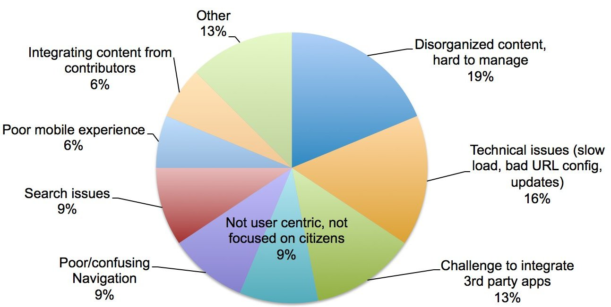
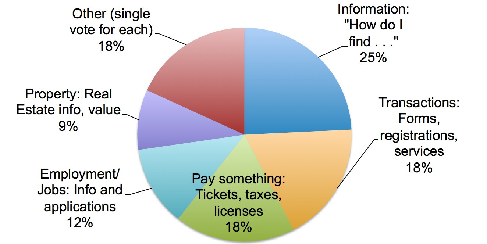

Overview
Code for America has, from its beginning, worked to improve the quality of government engagement with its citizenry. As the organization has matured, these principles became a set of core practices that can be applied to government websites and communications. More recently, the Digital Front Door Initiative has begun developing software that encodes these practices.
Part of our process has been to solicit information and feedback from key stakeholders, including city and county government webmasters, IT departments and PIO’s, as well as citizens. We were pleased to have the opportunity to survey 32 government webmasters at the National Association of Government Webmasters 2015 Conference in Albuquerque, NM September 22 - 25th.
Generally, these findings show a gap between the desire government webmasters have to easily and cleanly provide needed information and transactions (such as paying tickets or submitting forms) to their public via the city or county website, and the limitations of the tools, administrative processes and decision-making authority available to them.
They are concerned that government websites fall short in terms of how useful they are to the end users residents because the information presented is often disorganized, difficult to navigate and search, and not focused enough on user needs (mobile access, transactional, etc). That said, webmasters rate their website’s usefulness at an average rating of 3.6 on a scale of 1 - 5 when asked “Today, how well can your residents conduct business digitally?”
All respondents, whether from city or county government or other government agencies, expressed a significant desire for tools and products that were focused on the needs of government websites. The choices of which CMS or web development platform was currently in use were all over the map, ranging from blogging platforms and highly structured/template driven CMS’, general commercial products, open source, SaaS and installed software, and CMS specifically for government customers. Feedback on what was particularly useful or challenging in using each specific product also covered a wide range of issues. There was a consistent need expressed for tools that could improve the overall quality of web content, are specifically written for government use and workflows, and are easy to use.
Overall, the public servants tasked with providing clear, concise and actionable information to citizens are seeking better processes, internal support and technological tools. The Code for America Practices resonate with them, and they are eager for products that produce improved quality and universal access to their digital communications.
Results
- Total respondents: 32
- Total City Webmasters: 20
- Total County Webmasters: 5
- Total Other Government Webmasters: 7
Question: How well can your residents conduct their business digitally?
Scale 1 to 5, where 1= Information only/no transaction, 3=Pay Parking Tickets only, 5=Anything you can do at City Hall you can do Online
Average score was 3.6.
Only one participant indicated a score of 1, and only one indicated a score of 5. Generally, government webmasters feel that their sites are doing a decent job meeting the needs of residents online. This was, however, the first question in the survey, and as they went on it became more clear that while the answer to a generalized question was fairly positive, there is much more concern when drilling into the specifics of what is working and what is not.
Question: When did you last redesign your website? When do you plan your next redesign?
On average, these results show that government websites have a 2 - 5 year lifecycle between redesigns. Several respondents indicated that this was based on funding cycles, while others mentioned shifts in leadership (new mayor or administration). The size of the internal team also was a factor, with smaller web teams (1 or 2 people) doing a full redesign less frequently in favor of many smaller iterative changes happening ongoingly.
Question: What is the biggest problem or frustration that you have with your website?
When webmasters are asked what the biggest issues are for them with the website, it is understandable that many of their concerns are technical in nature. 16% of the responses focused on purely technical issues, and another 13% were related to integration issues with 3rd party applications. This mirrors much of the frustration of citizens using the site, who wanted to have electronic signatures, payment capabilities or online forms processing, all of which are often provided by products that can be implemented as plug-ins or integrated apps. In addition, many of the concerns that webmasters feel are directly because of the limitations the current websites impose on citizens. Confusing navigation, disorganized content and a poor mobile experience are all frustrations for users as well as webmasters. The reflection that the sites are not focused on user needs or citizen-centric suggests that the webmasters surveyed are keenly aware of the disconnect between what they want to provide their citizens, and what they are currently delivering. Issues with integrating content from multiple providers is perhaps a more specific version of the “hard to manage content” category. For the complete set of responses, refer to the Appendix.

Question: What is your current CMS?
| In-house/Custom Built CMS | 30% |
| Wordpress | 16% |
| CivicPlus | 16% |
| Drupal | 10% |
| Joomla | 6% |
| Microsoft (any) | 6% |
| Other | 23% |
Question: What do you like most (about your CMS)? |
What do you like least? |
|---|---|
| Easy to use/update | Awkward formatting |
| Easy interface- no coding | Terrible editor/publishing tools |
| Extensible | Slow |
| Flexible | Limited updates/customization/integrations |
| File upload and Cloud storage | Locked in to vendor for improvement |
| Updates are handled well | Not HTML/CSS compliant or completely accessible |
| Content updates, modular content | Lack of support |
The results to the question about what CMS was used by participants proved less valuable than the information collected about the best and least liked features of each CMS. The specific choice of CMS was spread somewhat evenly between open source, template driven platforms, commercial enterprise CMS’ and government focused products. More interesting were the results from the “best and least” questions. What emerged was the need for products that are easy to use, extensible, provide editing/publishing tools, allow for integrations with 3rd parties, are easily updated, and provide solid support. In discussions with participants at the booth, several mentioned the need for editing and publishing tools that could improve the overall content, and concerns about content migration as a significant hurdle when considering website redesigns. There was also a common frustration voiced that the webmaster may not have a choice in the CMS chosen by a manager in charge of the IT budget, but not in charge of front end development and content.
"What we really need are tools that improve the writing on the site. Not just a migration of printed content."
“I couldn't convince my IT department to roll out anything other than Sharepoint but I am the one responsible for the front end and content.”
Question: What is your comfort level with SaaS?
Scale 1 to 5, where 1= We only Host On-Site, 3=For Non-essential apps, 5=We Happily use SaaS wherever appropriate
Government websites are sharply divided in regard to SaaS usage, with the average answer being 2.97 on the scale of 1 - 5. More interesting still, the results were strongly polarized with eleven respondents selecting a 1 (We only host on-site), and nine answering with a 5 (We Happily use SaaS wherever appropriate), and the remaining ten respondents choosing 2, 3 and 4. There were no questions asked in the survey about who had the authority to specify if a government could use hosted services rather than installed products, but general discussion at the booth leads to an anecdotal belief that this decision is generally not in the hands of the webmaster.
Question: Which of these three pricing models are you most comfortable with? (Options: Tiered pricing by features, Tiered pricing by seats, Variable pricing based on population)
The majority of webmasters polled favored the traditional pricing model of tiered pricing by features (53%). Tiered pricing by the number of seats was next most popular (28%) and the Variable pricing based on population was selected by 19%. Without more context to discuss WHY a particular pricing model was selected it is impossible to know what the motivation is, but it could be due to the familiarity with the tiered model, as this is a traditional software pricing structure. It was interesting to see that despite the relative newness of the idea, 19% were most receptive to the idea of providing a sliding scale based on the population that will have access to the website and an opportunity to use it.
Question: What would be most likely to influence your decision regarding a new CMS?
This question offered three choices (and a write-in option), to solicit input on what are the biggest drivers for webmasters in looking for a new website platform or CMS. 50% of respondents prioritized products that have specific features for Government websites, over 38% who were more interested in value and price, and 9% that would look first at the brand and references of the vendor. At the booth, and in the answers to survey questions, government webmasters identified their desire for products that could facilitate the very unique needs of city and county websites. In specific, they are less interested in generalized features available in a standard CMS in favor of products that can offer tools for multiple non-technical content providers, content migration and improvement from legacy cites, create and support sites with a high number of short and targeted transactions, and be easily translated and mobile accessible. The specialized needs of government are not easily addressed in the commercial market.
Question: What features are most important to you and your content contributors?
For each feature, rate on a scale of 1 - 5, where 1 = I have no need for this, and 5 = This would revolutionize my life
-
Features that guide content contributors to write more effective, easily understood content
Average - 3.61 -
A Dashboard view by contributor, showing the activity on each page they publish
Average - 3.58 -
A Dashboard view by department or service, to show publishers the activity on each page they publish
Average - 3.67 -
A CMS specifically designed for city/cty government needs rather than commercial site needs
Average - 3.84
Once again, the desire for a CMS designed specifically for city/county government (rather than a generalized commercial product) had the highest overall average score. But in all four cases, the features proposed show significant value to government webmasters. Whether it is writing guides and tools, or a dashboard that can show activity to content contributors or departments to assess how the public is actually accessing and using information and services on the site, the general impression is that these tools would provide value.
Question: What is the most frequent request from the public?

Perhaps not surprisingly, the public wants to be able to actually do business on their city and county website. While the largest individual category (28%) was some version of getting information (When is my garbage pick up, where is a local park, who are the school board members), another 48% involved some type of transaction. These included paying something (18%), transacting via a form, registration or service (18%) and engaging in employment or jobs for the city/county (12% - including both job information and online applications). Considering this very high percentage of citizens who access the website to actually complete a transaction or payment, it is no wonder that the key concerns raised by webmasters include the need to improve the navigation, content quality, integration with 3rd party apps, mobile readability, etc.
Next Steps
In order to assist cities and counties improve the effectiveness of their websites, Code for America encourages tools and services that align with our 21st Century Practices. The goal is for government to improve the quality and accessibility of web content, and increase the value of websites for their public. It is clear from the 2015 NAGW Survey that government webmasters across the country share this desire, and are actively working to identify strategies and tools that can assist them with this endeavor.
Appendix
Raw Data from open-ended questions
Question: What is the biggest problem or frustration that you have with your website?
-
Disorganized and cluttered, not user-centric, inability to communicate with users
-
LACK OF ACCESS
-
Inability to do electronic sigs
-
Browser and not mobile
-
The site looks good at first glance, but it's built on older technology. the website isn't responsive, content heavy and not citizen centric.
-
Managing content
-
Integration of some third party applications could be better
-
Online absentee applications
-
size
-
PDF reliance.
-
Search engine, mobile friendly, usability
-
We migrated to a hosted CMS that is not meeting our needs as promised
-
Allowing clean access to users to provide content
-
Content auditing and workflow
-
Poor IA and not service oriented
-
Too wordy, navigation not ideal. Search is not as good as it should be.
-
Lack of interoperability
-
Too much Content
-
Connecting online payments in a cms to work with our payment vendor and our internal cashier application
-
can't get docker to work
-
Navigating to the sites they need
-
Integrating the information and services from disparate and reluctant sources.
-
None
-
adding new updates that elected officials will not allow us to do
-
adding new updates that elected officials will not allow us to do
-
Search
-
Content
-
Keeping content from myriad outside partners up to date
-
sometimes it loads slowly
-
Finding the right page faster
-
Bad URL config
-
The CMS we have does not integrate well with other vendors.
Question: When did you last redesign your website? |
When do you plan your next redesign? |
|---|---|
Too many moons ago. |
There has been talk but I am unaware of if/when action will commence. |
LAST MONTH |
UNDER CONSTRUCTION |
In process . Launching next month |
3-4 years |
In the process |
In the process |
2009 |
we are in the RFP development process now. |
2013 |
2016 |
2015 |
2020 |
2009 responsive site to go live mid-october |
October 15 2015 |
2010 |
2016 |
Now |
2 years |
5 years |
2016 |
May 2015 |
I will begin in the fall of 2016 |
8 years plus |
This next year |
12 months |
~24 months |
Years...code upgrade last year, but same design and IA |
As soon as possible |
2011 - in process right now |
In process |
2013 |
2015 |
2012 |
Now |
2 months ago |
3 yrs |
2001 |
|
Two years ago |
One to two years |
12/2014 |
18-24 months |
Continue |
6 mo + |
2 years ago |
another year or so |
2 years ago |
another year |
2013 |
Continuous improvement |
August |
January |
1 year ago |
Currently in process |
planning to redesign this year |
this year |
2008. Now working on it |
Now |
2008 |
this year |
In the middle of a redesign right now (Sept. 2015). Before that, it was 2012. |
Now |
Question: What is the most frequent request/question from the public about your website?
-
Want ability to do Transactions.
-
IMPROVEMENT SUGGESTIONS
-
When is trash collection this week?
-
Employment info/applications
-
Real estate data, job applications
-
Property value information
-
Online class registrations
-
Copies of records-
-
not sure
-
ut of date info
-
How do I get to or how do I find....
-
Can I pay for a building permit online, get information about building something, track a project, etc.
-
Property information
-
Available jobs with the city, payments for various services
-
Employment
-
Transactions for services and online forms
-
Divorce and child support forms.
-
Transportation
-
Transactions
-
Facility rentals and online ticket payments
-
Requests for services we do not provide (mistaking city services for county, etc)
-
None
-
election information
-
election information
-
Pay taxes
-
Licensing for firearms and explosives
-
Upcoming events in the state
-
information
-
Tax and licenses info
-
pay online
-
What's being built? Information about development in the city: what is planned, what is going on now, what just finished?
Question: What is your current CMS?
-
Wordpress
-
Egovlink
-
Civica
-
Homegrown
-
Wordpress
-
Ektron
-
CivicPlus
-
Drupal
-
DotNetNuke
-
CivicPlus
-
Custom Coldfusion
-
Joomla
-
3 on WP, rest hand-coded
-
Wordpress
-
Custom
-
Unknown at this time
-
CivicPlus
-
Wordpress
-
CivicPlus
-
Joomla
-
Html5
-
vision internet
-
Drupal
-
Microsoft (any)
-
Drupal
-
In-house (Laravel)
-
interwoven teamsite
-
Microsoft (any)
-
CivicPlus
Question: What do you like best about your CMS? |
What do you like least? |
|---|---|
Easy interface for creating content. |
Awkward formatting, disorganized design with each page sitting separately. |
THIS IS A POPULAR PLATFORM |
DIFFICULTY FOR PERSONALIZATION |
It's a website |
Terrible editor |
Their design |
Too many people involved |
The interface is fairly easy to use. |
Challenges with support, aging infrastructure issues. |
Editors are familiar with it |
No external support options |
Extensibility |
Can get slow |
Taxonomy and content search |
Calendar |
eliminates coding by hand |
no support for data driven sites |
I hate Drupal. |
I hate Drupal. |
It doesn't do well!!! |
Editing, usability |
It forced us to review and update all content, and engage content providers (staff) for the first time. |
They oversold their abilities. They are not HTML/CSS compliant or completely accessible. |
Minimal CMS - users understand basic functionality |
Very limited to what content can be updated |
Rapid content updates, modular content |
Nothing major |
Extensible |
Admin dashboard difficult to customize |
Very flexible and open |
Plugins |
Simplicity |
Lack of standards compliance and vendor lock in. |
We're in the beginning phase of content redesign |
No E services |
My editors understand it |
Very inflexible for custom needs |
starting |
|
Easy to use |
Can be confusing to use in some of the modules |
Ease of use, flexibility, affordability |
There are quirks that drive me crazy, but they are too wonky to really illustrate here |
Easy to use |
Adding media |
updates |
support |
updates |
support |
Meets our needs |
Lots of initial customization |
Can use without extensive knowledge of programming language |
Have to continuously customize modules to meet programme needs |
File upload and cloud storage |
Some elements are hard-coded and require agency intervention to update |
options to code for expansion |
support is bad |
Content replacement |
It is not friendly but can have lot of features |
various module options |
not customizable |
Having a CMS makes it easy for non-techies to update their content. |
The only way to integrate 3rd party components is by iFrame. |